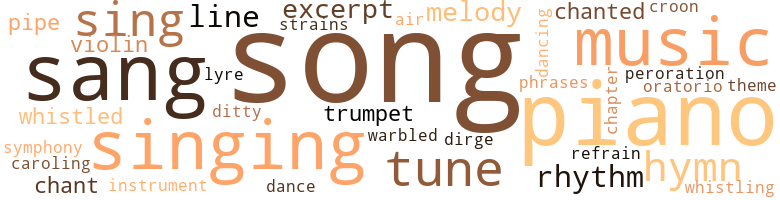
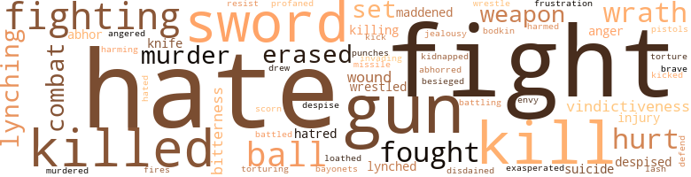
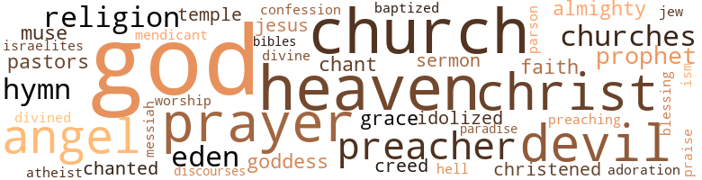

Publicans and Sinners, by Shores, Minnie T. (1960)
112 music-related terms matched in this text.
Most frequent terms in this topic: piano (14); song (12); sang (11); music (8); singing (7)
cantata.n.01
Definition: a musical composition for voices and orchestra based on a religious text
| word | sentence |
|---|---|
| oratorio | " Yes , darling - surely my right to call you darling is not abrogated - but it was a false note that has marred the oratorio of our lives . |
caroling.n.01
Definition: singing joyful religious songs (especially at Christmas)
| word | sentence |
|---|---|
| caroling | The household heard her caroling . |
chant.n.01
Definition: a repetitive song in which as many syllables as necessary are assigned to a single tone
| word | sentence |
|---|---|
| chant | He heard the muse of history chant paens for the sword of sable Eury - bates and that black hero of the West whose name , " when Truth gets a hearing " will be written far above the greatest name known to any other nation . |
| chant | It had been impossible for Birdie to refuse the company a song for her whole soul was a lyre , love was sweeping all its strings , and life was a rapturous chant . |
chapter.n.01
Definition: a subdivision of a written work; usually numbered and titled
| word | sentence |
|---|---|
| chapter | What he read sent him rushing on like a bayonetted lion until , in Birdie 's presence , he vehemently poured out the words that made an opening for this chapter . |
cornet.n.01
Definition: a brass musical instrument with a brilliant tone; has a narrow tube and a flared bell and is played by means of valves
| word | sentence |
|---|---|
| trumpet | Nora : So he shouted through a trumpet - Fred : In a sort of Runic rhyme - Amy : Equal justice , right , and law ! |
| trumpet | So , he shouted through a trumpet In a sort of Runic rhyme , ' Equal justice , right , and law , ' Through the corridors of time . " |
croon.v.01
Definition: sing softly
| word | sentence |
|---|---|
| croon | " I heard Mrs. Lambdin croon them . |
dance.v.02
Definition: move in a pattern; usually to musical accompaniment; do or perform a dance
| word | sentence |
|---|---|
| dancing | He 's dancing with Jennie . " |
dance.v.03
Definition: skip, leap, or move up and down or sideways
| word | sentence |
|---|---|
| dance | Nora shouted and began to dance the Charles - ton in demonstration of her delight . |
dirge.n.01
Definition: a song or hymn of mourning composed or performed as a memorial to a dead person
| word | sentence |
|---|---|
| dirge | Tom and Amy thought out many devices for making time in the Freelord home move like a lively ditty instead of a dirge . |
ditty.n.01
Definition: a short simple song (or the words of a poem intended to be sung)
| word | sentence |
|---|---|
| ditty | Tom and Amy thought out many devices for making time in the Freelord home move like a lively ditty instead of a dirge . |
excerpt.n.01
Definition: a passage selected from a larger work
| word | sentence |
|---|---|
| excerpts | She made Yooeffe 's bedtime stories mere excerpts from the story of her life - life below the Mason-Dixon line . |
| excerpt | " I have answered your question , " Alfred said , picking up the excerpt from his father 's will . |
| excerpt | He had regained his composure when Helen finished the excerpt . |
hymn.n.01
Definition: a song of praise (to God or to a saint or to a nation)
| word | sentence |
|---|---|
| hymn | Now and then she hummed the fragments of an old church hymn , and all the while she mused : " God says , ' Take the chile and nurse it for me and I will give thee thy wages , " That 's what I done . |
| hymns | He also told her the origin of the hymns they sang in church . |
| hymn | Lester advanced to the rail of the choir box and sang the final hymn - " God will take care of you . " |
lyre.n.01
Definition: a harp used by ancient Greeks for accompaniment
| word | sentence |
|---|---|
| lyre | It had been impossible for Birdie to refuse the company a song for her whole soul was a lyre , love was sweeping all its strings , and life was a rapturous chant . |
music.n.01
Definition: an artistic form of auditory communication incorporating instrumental or vocal tones in a structured and continuous manner
| word | sentence |
|---|---|
| music | And , oh , how she loves music ! |
| music | Lester had often heard Birdie at the piano and was pleased to admit that the dis - tracting torture he once supposed would be his portion was always supplanted by captivating music . |
| music | Both Lester and Birdie loved music . |
| music | She was charmed as if by a tuneful gush of water from a hidden spring , and she listened as music - lovers listen to a perfect ballad in a foreign tongue . |
| music | No , the music was presented as if from a scroll within her bosom . |
| music | However , she never forgot , when budgeting time , to allot some to the enjoyment of the soul 's refining delights : painting , music , reading . |
| music | However , tell me now that you will be my wife and the music will again be rapturously perfect . " |
| music | So , they laughed and chatted until the balmy winds bore to them strains of orchestral music . |
musical_instrument.n.01
Definition: any of various devices or contrivances that can be used to produce musical tones or sounds
| word | sentence |
|---|---|
| instrument | Well , John Brown of Osawa - tomie put a halo on that death instrument , and now I learn that my own ancestor placed the laurel there . " |
peroration.n.02
Definition: (rhetoric) the concluding section of an oration
| word | sentence |
|---|---|
| peroration | At the peroration of his summary , Lester inwardly cried out wrathfully , " Devil take that conniving uncle of mine ! |
phrase.n.02
Definition: a short musical passage
| word | sentence |
|---|---|
| phrases | Birdie clasped her hands and , trembling from head to toe , said over and again alternately two phrases : " I will not do that thing to Helen ; I can not do that to Helen . " |
piano.n.01
Definition: a keyboard instrument that is played by depressing keys that cause hammers to strike tuned strings and produce sounds
| word | sentence |
|---|---|
| piano | The foster daughter earns a living by banging on the piano . |
| piano | Lester had often heard Birdie at the piano and was pleased to admit that the dis - tracting torture he once supposed would be his portion was always supplanted by captivating music . |
| piano | " All work and no play makes Jill a glum girl , " came Helen 's mild rebuke one day when she encountered Birdie rushing from the piano to the typewriter . |
| piano | As she walked to the piano , her youthful gait was charming - like the elegant rhythm of a perfect poem . |
| piano | The grand piano had been fully paid for a week ago . |
| piano | If that combination is not sufficient , " - he never knew what agony she suffered in saying , - " I 'll sell my new piano to supply the deficit . " |
| piano | Our home is completely paid for ; you have a wonderful piano pa - tronage ; Helen is earning a good salary . |
| piano | And now there is just one addition needed in the whole house - a grand piano . |
| piano | When I get a grand piano , I 'll be perfectly happy . " |
| piano | She would go to the piano and play some soft air calculated to anoint his soul with solacing oil until his heart would again run over with guileless joys . |
| piano | Her mind was too full of dreaming about a grand piano . |
| piano | The piano and I did the rest . " |
| piano | Yooeffe gasped at sight of the fine grand piano . |
| piano | She sat down at the piano of which she was so proud and for which she was so thankful . |
pipe.n.04
Definition: a tubular wind instrument
| word | sentence |
|---|---|
| pipe | " I am very happy over it , " Mrs. Freelord confessed to her husband who sat in soft slippers and smoked his pipe . |
| pipe | " I came here hunting for a cob pipe for dear old Gramma . |
refrain.n.01
Definition: the part of a song where a soloist is joined by a group of singers
| word | sentence |
|---|---|
| refrain | " I 'm on my way to Springfield , home o ' Lincoln " Those words became a song and sang themselves in Gramma 's ears like the refrain of a rallying tune . |
rhythm.n.04
Definition: the arrangement of spoken words alternating stressed and unstressed elements
| word | sentence |
|---|---|
| rhythm | And he has filled our home with a rhythm of thought and feeling never known before . " |
| rhythm | As she walked to the piano , her youthful gait was charming - like the elegant rhythm of a perfect poem . |
| rhythm | - that ever-new Blue Danube , " Nora cried , tap - ping the rhythm lightly with her toes . |
sing.v.02
Definition: produce tones with the voice
| word | sentence |
|---|---|
| sing | Inspired by Birdie 's optimism , Helen began to sing , " God bless America . " |
| sang | " Sister , Anne , Sister Anne , " he jovially sang , " I think I see our helper coming . " |
| sang | After a few seconds , he sang on , " I surely do . " |
| sing | Hearing Birdie sing and play was one of Helen 's chief delights . |
| sang | He also told her the origin of the hymns they sang in church . |
| sang | They sang , for when the music director heard of Lester 's marvelous tenor , his paramount object was to add that attraction to his choir . |
| singing | Loth to acknowledge defeat , he tried to keep up his spirits by promenading in the garden , mimicking the cardinal that kept a prudent distance from him in the leafy poplars , by singing a tuneful lay , and playing ball with Bruno . |
| sing | Then he joined the applause for , at the request of many , Birdie had consented to sing . |
| sang | The song she sang was Mine Alone . |
| sang | She sang for the entire company but she sang to Lester only , and in his heart the echo of her song was an immortal symphony . |
| sang | She sang for the entire company but she sang to Lester only , and in his heart the echo of her song was an immortal symphony . |
| sang | Lester advanced to the rail of the choir box and sang the final hymn - " God will take care of you . " |
| sing | " Because I saw the sun set big and red last evening , " she said and began immediately to sing : " ' When the evening 's red and the morning gray , It 's the sign of a bonny , bonny dayl ' " The light came out from the sun like this , " she con - tinued , separating her fingers widely in illustration . |
| sang | " I 'm on my way to Springfield , home o ' Lincoln " Those words became a song and sang themselves in Gramma 's ears like the refrain of a rallying tune . |
| sang | Weary spirits lifted up their heads and sang , " The winter is past , the rain is over and gone ; the flowers appear on the earth ; the time of the singing of birds has come . " |
| sang | At my request she sang them repeatedly . |
singing.n.01
Definition: the act of singing vocal music
| word | sentence |
|---|---|
| singing | She loves life , sunshine , flowers , singing . |
| singing | The joy of singing and playing became a growing obsession for them . |
| singing | Never did shepherds wonder more at angels ' singing than did the party guests at the power and beauty of her voice . |
| Singing | Singing the songs and telling the tales which dried sorrowing childrens tears and made happy children happier no longer gave him pleasure . |
| singing | Birdie 's soul was singing when Cassius drove back to Miss Patricia 's , earth seemed never so fair for she was a girl with a pedigree and that broke the social fetters which bound her beneath " aristocrats " . |
| singing | Weary spirits lifted up their heads and sang , " The winter is past , the rain is over and gone ; the flowers appear on the earth ; the time of the singing of birds has come . " |
| singing | " The newcomer was a cheery asset , went around the house singing like a bird . |
song.n.01
Definition: a short musical composition with words
| word | sentence |
|---|---|
| song | Laughter is our song in the night ; it is the ballast that keeps our good ship Hope from sinking ; so , here 's hoping that when America gets out of this war she 'll come clean , giving us full measure of the democracy , decency , and freedom she hollers so much about . |
| song | Having no other name to call her creation , she called it her song and named the composition , " Mine Alone . " |
| song | It had been impossible for Birdie to refuse the company a song for her whole soul was a lyre , love was sweeping all its strings , and life was a rapturous chant . |
| song | The song she sang was Mine Alone . |
| song | She sang for the entire company but she sang to Lester only , and in his heart the echo of her song was an immortal symphony . |
| song | Do with a smile and a song and the doing is luxurious . |
| song | An odor of vegetables , mixed with the fragrance of flowers , the cluck-cluck of chickens , blended with the song of birds , revealed the heterogeneous nature of the country half-aci ^ which Mrs. Lambdin knew as " Home Sweet Home . " |
| song | However , her chief concern , her dearest wish , was to to insure Myrtle the sunshine , the fresh air , the well-balanced meals , es - sential to sound health ; to give her wise guidance up the winding stairs of the three R 's where the truths of all ages are exhibited for inquiring minds ; to keep the child 's ex - panding soul attuned to that song of love which makes the eyes open wide to behold the beauty of life and closes them against the ugliness . |
| song | Birdie had no way of knowing that the soloist had plan - ned the reading , the preaching , and the song . |
| songs | Singing the songs and telling the tales which dried sorrowing childrens tears and made happy children happier no longer gave him pleasure . |
| song | Its homely beauty sends it straight to the heart like a song whose theme is love . " |
| song | But the tranquilly happy voice so often heard there was hushed ; laughter and song were no more . |
| song | " I 'm on my way to Springfield , home o ' Lincoln " Those words became a song and sang themselves in Gramma 's ears like the refrain of a rallying tune . |
| songs | Your folk songs - the French and the Welsh - were wonderful , but the Ameri - can folk songs capped the sheaf . |
| songs | Your folk songs - the French and the Welsh - were wonderful , but the Ameri - can folk songs capped the sheaf . |
| songs | " With her assistance I plan to gather up the old songs of our forefathers and preserve them in their original beauty . |
| songs | They are the only real American folk songs . " |
symphony.n.01
Definition: a long and complex sonata for symphony orchestra
| word | sentence |
|---|---|
| symphony | She sang for the entire company but she sang to Lester only , and in his heart the echo of her song was an immortal symphony . |
theme.n.03
Definition: (music) melodic subject of a musical composition
| word | sentence |
|---|---|
| theme | Its homely beauty sends it straight to the heart like a song whose theme is love . " |
tone.v.01
Definition: utter monotonously and repetitively and rhythmically
| word | sentence |
|---|---|
| chanted | Deep within him his soul chanted : " She walks in beauty like the night Of cloudless climes and starry skies ; And all that 's best of dark and bright Meet in her aspect and her eyes : Thus mellowed to that tender light Which heaven to gaudy day denies . |
| chanted | All the magnificent beauty of the luxurious summer night seemed wedded to the superb loveliness of her ebon face as her soul and heart and mind chanted in unison , " I love him so - oh , I love him so ! " |
tune.n.01
Definition: a succession of notes forming a distinctive sequence
| word | sentence |
|---|---|
| tune | A mirror showed her Yooeffe looking most disconsolate in " that little room " and tapping a humdrum tune on the table by which he sat . |
| tune | Dick threw his cigar - ette away and , gesticulating like a fiddler , hummed a tune that she might keep step . |
| line | Fear is the only restraining element to bank on for holding big devils as well as little ones in line . |
| melody | There her heart offered an interpretation of the perplexing melody . |
| tune | She supplied words to it and worked out a tune . |
| line | " Your query is entirely out of line . |
| air | " She said she must take an important letter to the post office and stamp it air mail , special delivery . " |
| melody | " Promise me , Birdie , and time will be a grand sweet melody all the year of our lives until autumn tinges the ripened grain and the Reaper gathers us into the granary of our King . |
| line | Birdie looked in the direction Cassius indicated and saw a G.A.R. suit hanging on a line . |
| tune | " I 'm on my way to Springfield , home o ' Lincoln " Those words became a song and sang themselves in Gramma 's ears like the refrain of a rallying tune . |
| melody | Their melody was the sweetest of all time . |
| strains | So , they laughed and chatted until the balmy winds bore to them strains of orchestral music . |
violin.n.01
Definition: bowed stringed instrument that is the highest member of the violin family; this instrument has four strings and a hollow body and an unfretted fingerboard and is played with a bow
| word | sentence |
|---|---|
| violin | He stepped into the room and , apolo - gizing , asked if he might fetch his violin and join her . |
| violin | His violin became a stranger to him . |
whistle.v.01
Definition: make whistling sounds
| word | sentence |
|---|---|
| whistling | He limped away in joy and haste , whistling Annie Laurie as he went . |
| whistled | Herbert whistled and jumped , so great was his surprise that Sidney Freelord had accumulated the stated cash sum on one account . |
| whistled | Dick whistled . |
yodel.v.01
Definition: sing by changing register; sing by yodeling
| word | sentence |
|---|---|
| warbled | " He likes all of us , " Birdie warbled without reading or attempting to read Yooeffe 's mind . |
168 violence-related terms matched in this text.
Most frequent terms in this topic: hate (14); fight (12); gun (7); killed (7); sword (7)
abhor.v.01
Definition: find repugnant
| word | sentence |
|---|---|
| abhorred | He utterly abhorred his self - imposed situation , and had never imagined it could be so distasteful . |
| loathed | So long as we are loathed like lepers , we 'll be trammeled like slaves . " |
| abhor | I positively abhor the very thought of a woman 's marriage to an inferior as I would an asinine policy of mating eagles with geese or herding lionesses with swine . |
| abhor | I abhor it . |
anger.n.01
Definition: a strong emotion; a feeling that is oriented toward some real or supposed grievance
| word | sentence |
|---|---|
| anger | He saw Yooeffe walk in , eyes aflame with righteous wrath , face pale with anger . |
| anger | They were paralyzed by combined anger and fear . |
anger.v.02
Definition: become angry
| word | sentence |
|---|---|
| angered | First it had angered him ; then , he had forgotten it ; but now , it returned to him like the devil who found his house swept and garnished . |
battle.v.01
Definition: battle or contend against in or as if in a battle
| word | sentence |
|---|---|
| battled | Yooeffe remained by the table and battled with his conscience for approval of the he he had foisted on Gramma . |
| combat | If nothing stronger than words combat the evil , bigots will be having atrocious lynchings , denouncing folks who pray to the Virgin Mary , and cir - culating anti-Semitic literature when the Jew they claim to worship comes from heaven to judge the world . " |
| battling | It was plain to see that Death was battling hard to win him for the grave . |
bayonet.n.01
Definition: a knife that can be fixed to the end of a rifle and used as a weapon
| word | sentence |
|---|---|
| bayonets | Guns , bayonets , bombs , etc. can not reform people . |
besiege.v.01
Definition: surround so as to force to give up
| word | sentence |
|---|---|
| Besieged | Besieged by nostalgia , she opened a volume of kodak pictures . |
contemn.v.01
Definition: look down on with disdain
| word | sentence |
|---|---|
| despised | The mind of each was filled with the same thought : What has Africa done that her children are despised and maltreated ? |
| disdained | Birdie disdained the bed . |
| scorn | Pity and scorn were in her tone . |
| despise | I have no contempt for the lowly because of their humble station , but I despise everyone who advances beyond that status and snubs those who unfortunately stay behind . |
| despised | They had thrown sticks and stones at the Freelords but now wove panegyrics for them ; they had despised them but now admired and esteemed them . |
desecrate.v.01
Definition: violate the sacred character of a place or language
| word | sentence |
|---|---|
| profaned | One word would have profaned the holiness of mutual pity . |
draw.v.23
Definition: pull (a person) apart with four horses tied to his extremities, so as to execute him
| word | sentence |
|---|---|
| drew | Helen drew up a chair and sat facing them . |
envy.n.01
Definition: a feeling of grudging admiration and desire to have something that is possessed by another
| word | sentence |
|---|---|
| envy | She did not pause there lest envy corrupt her thinking . |
erase.v.01
Definition: remove from memory or existence
| word | sentence |
|---|---|
| erased | Human nature had not yet been erased by prejudice . |
| erased | The scars and stains on the past could not be erased . |
| erased | His eyes still rested on what to her was a mystery sheet , and her last question was erased by one of his own in her identical words , " How do you like this ? " |
fight.n.02
Definition: the act of fighting; any contest or struggle
| word | sentence |
|---|---|
| fighting | Hard fighting , awful hard fighting , too , they done . |
| fighting | Hard fighting , awful hard fighting , too , they done . |
| combat | You see , Hiroshima is a settlement of women , children , and old men - men too old for combat duty . |
| combat | They got to their feet and continued in a hand and fist combat . |
| fighting | " No fighting , " Dick laughed , playfully laying a hand on each of his friends as if force were necessary to prevent a melee . |
fight.n.05
Definition: a boxing or wrestling match
| word | sentence |
|---|---|
| fight | The fight to ward off tedium had been bravely carried on but weariness threatened to win . |
| fight | If now the candle would throw its fight so far as Wisconsin , we should not attempt to hide it under a bushel . |
| fights | Small fights in the dis - tance blinked intermittently like fireflies ; near at hand they blazed like tiny suns from unimportant stations which the train sped by . |
| fight | " However hot the battle , however ghastly the wounds , however severe the suffering , strength for the fight is all one needs . |
fight.v.02
Definition: fight against or resist strongly
| word | sentence |
|---|---|
| fought | But , paradoxically , he was among the first soldiers that fought for Ameri - can Independence . |
| fight | He was proud of his participation in the Revolutionary struggle and boasted of it as if he had dropped from heaven ready-made with sword in hand to fight at the Battle of Cowpens . |
| fought | In the Massachusetts Fifty-Fourth he fought valiantly for Union and Liberty . |
| fight | " Fred never would fight for himself , " Tom remarked . |
| fight | " I will not fight for such a country . " |
| fight | Go to camp , get the training , but when sent to fight , do n't let the right hand know what the left hand is doing . |
| fight | " Today we have , with aching hearts , asked ourselves the question , Should Negroes fight for America ? |
| Defend | " Defend America whose foundation is laid in justice , liberty and equality for all . |
| fight | " But for prejudice , " he continued , " I should not have been wounded and could go and fight . " |
| fight | You ai n't fit to live but we let you 'cause we sometimes has to make you fight to keep us white folks on top o ' the world . |
| fought | Maybe he would not have fought in self-defense , but duty and honor compelled him to fight for the women of his party . |
| fight | Maybe he would not have fought in self-defense , but duty and honor compelled him to fight for the women of his party . |
| fought | They fought fiercely . |
| fight | We must fight . " |
| fighting | She is an orphan and widow because her father and husband were killed fighting to maintain slavery for Birdie 's forefathers who were fighting to be free . " |
| fighting | She is an orphan and widow because her father and husband were killed fighting to maintain slavery for Birdie 's forefathers who were fighting to be free . " |
frustration.n.03
Definition: a feeling of annoyance at being hindered or criticized
| word | sentence |
|---|---|
| frustration | " I am surprised to see you , " she said , vainly trying to conceal her frustration . |
gun.n.01
Definition: a weapon that discharges a missile at high velocity (especially from a metal tube or barrel)
| word | sentence |
|---|---|
| guns | " Great guns ! |
| Guns | Guns , bayonets , bombs , etc. can not reform people . |
| gun | Enraged by their failure to leave the car , Theodore yelled furiously , " Ben , give me our gun . |
| gun | " Fetch me their gun , " Paul anxiously urged . |
| gun | " One said they have a gun in their car . |
| gun | Seeing his advantage and fearing Alberta would procure the gun , Theodore chased after her . |
| gun | He seized the gun and was hastening back when Fred regained consciousness and sprang upon him . |
| gun | I seized my gun and swore to take some of them along if I had to appear before St. Peter . |
| guns | " Great guns I Keep your shirt on . |
| gun | " You son of a gun , " Dick cried . |
| guns | " Not all the guns that leveled Coventry can destroy his confidence . |
harm.v.01
Definition: cause or do harm to
| word | sentence |
|---|---|
| harmed | " I am un - harmed by a busy life . |
| harming | True , I ai n't never come out o ' no th ' ological cemetery but I knows what true religion is - treating everybody else right and not harming yourself . |
hate.n.01
Definition: the emotion of intense dislike; a feeling of dislike so strong that it demands action
| word | sentence |
|---|---|
| hate | Prejudice , bigotry , oppres - sion and hate can not reign forever in a nation that has produced a Lovejoy , a John Brown , a Thaddeus Stevens . " |
| hatred | What charge can be placed against them to justify the hatred ? |
| hate | I want to get a little house that we can call our own - a place free from the city 's noise and grime , and what is infinitely worse , crystalized hate forever dogging at one 's heels because one happens to be a Negro . " |
| hate | His unstudied pose and gestures were dramatic when he announced : " I found Him - found Him on the cross , praying for His enemies , giving love for hate . " |
| hate | With her foes beaten back , cleanse her of the filth - the race hate in which she wal - lows . |
| hate | Teach men and we turn the wilderness of hate , despair , and suffering into a garden of good will , hope , joy and peace . |
| Hate | " Hate is cruel . |
| hatred | I have reason for my hatred , " he presently professed . |
hate.v.01
Definition: dislike intensely; feel antipathy or aversion towards
| word | sentence |
|---|---|
| hate | " At the start , " he said dejectedly , " I 'll tell you what only the Carlton brothers and I know : they hate each other inordinately . |
| hates | " Can a man steal from one who hates and mistrusts him ? " |
| hate | I hate him . " |
| hate | " I am in no race for the surplice , " he added , and con - cluded vehemently , " I hate the Herbert Carltons . " |
| hate | " I hate to see folks in the mire and not offer a hand . " |
| hate | He is myriads over here , and I hate 'em - hate 'em , hate 'em . " |
| hate | He is myriads over here , and I hate 'em - hate 'em , hate 'em . " |
| hate | He is myriads over here , and I hate 'em - hate 'em , hate 'em . " |
| hate | I 'd hate like everything to miss her for I love to make her happy . " |
| hate | I hate the garbled mess we too frequently hear nowadays under the title Negro Spirituals . |
| hated | Strangely enough , in that hour , her plaintive tone filling his ears , he believed all she said and hated himself for ever doubting her . |
hurt.v.04
Definition: cause damage or affect negatively
| word | sentence |
|---|---|
| hurt | None of us is hurt by the snob . " |
infuriate.v.01
Definition: make furious
| word | sentence |
|---|---|
| exasperated | Unable to guess when they could advance , the picnickers were rather exasperated . |
injury.n.01
Definition: any physical damage to the body caused by violence or accident or fracture etc.
| word | sentence |
|---|---|
| injury | For his injury a cure seemed quite unlikely . |
| hurt | And for a while Dick forgot his wrath , his hurt . |
| injury | Lizzie can bunk outside without injury . " |
invade.v.01
Definition: march aggressively into another's territory by military force for the purposes of conquest and occupation
| word | sentence |
|---|---|
| invading | Never was stag , happily ensconced in its den , more shocked by the invading hunter 's horn than was Lester on reading Birdie 's message : " Lester , we must forget what happened at Barton - markes . |
jealousy.n.01
Definition: a feeling of jealous envy (especially of a rival)
| word | sentence |
|---|---|
| jealousy | He saw that not even the least bit of jealousy was provoked . |
kick_back.v.02
Definition: spring back, as from a forceful thrust
| word | sentence |
|---|---|
| kick | " Helen did n't kick too much . " |
| kicked | " I know discriminations are cruel and rampant , and our ac - complishments are far less than they would be if all hands were extended to help us up ; our plight would be more deplorable than it is if every heel kicked us . |
kidnap.v.01
Definition: take away to an undisclosed location against their will and usually in order to extract a ransom
| word | sentence |
|---|---|
| kidnapped | I expected Yooeffe and Birdie to marry long before Tom kidnapped my heart . " |
kill.v.10
Definition: cause the death of, without intention
| word | sentence |
|---|---|
| kill | It would kill me - literally kill me - if scandalmongers could speak one defamatory syllable against my name . " |
| kill | It would kill me - literally kill me - if scandalmongers could speak one defamatory syllable against my name . " |
| killed | The mob had killed her husband for giving impudence to a white man . |
| killed | Because she wanted to prosecute , the mob returned and killed her . |
| killed | Guess I 'd ' a ' killed him if Tom had n't made me quit . |
| killing | Something within compelled him to say aloud , " You are killing yourself - committing suicide if ever anybody was guilty . " |
| killing | " You are killing yourself , " Yooeffe solemnly said again . |
| Kill | Kill men and we get a mass of matter subject for putrifaction . |
| kill | Then , I 'd kill a hundred more . |
| kills | Whether in the head or feet or spine , cancer kills the one it attacks unless it is cut out . |
| kill | And she could hear again Helen 's tragically earnest tones declaring , " It would kill me - literally kill me , if scandalmongers could speak one defamatory syllable against my name . " |
| kill | And she could hear again Helen 's tragically earnest tones declaring , " It would kill me - literally kill me , if scandalmongers could speak one defamatory syllable against my name . " |
| killed | Birdie delayed at the post office , killed time going and coming , and returned home only when she was certain that Lester had reported at school . |
| killed | " I feel that I should not stay here , Mrs. Lambdin , and let Miss Hailows be overcome by insurmountable cares while Myrtle is dwarfed or killed by neglect . " |
| Kill | Yet they holler , ' Kill Hitler ! ' |
| killed | Neighbors would have killed you if they had only known . |
| killed | She is an orphan and widow because her father and husband were killed fighting to maintain slavery for Birdie 's forefathers who were fighting to be free . " |
knife.n.02
Definition: a weapon with a handle and blade with a sharp point
| word | sentence |
|---|---|
| knife | Then a mobster with a bowie knife - " Fred turned his look full upon Birdie and realized that he had already made his report too graphic and too long . |
| knife | I feel like that now , Birdie , for I know some cruel circumstance , like the knife of priests , has reached your heart . |
lynch.v.01
Definition: kill without legal sanction
| word | sentence |
|---|---|
| lynched | The community was rife with commentators talking of four Negroes lynched in Georgia . |
| Lynched | She had no need to wait for the newspapers which reported : " Three Negroes Lynched on Public Square . " |
lynching.n.01
Definition: putting a person to death by mob action without due process of law
| word | sentence |
|---|---|
| lynching | " Did you ever see a lynching , Fred ? " |
| lynchings | If nothing stronger than words combat the evil , bigots will be having atrocious lynchings , denouncing folks who pray to the Virgin Mary , and cir - culating anti-Semitic literature when the Jew they claim to worship comes from heaven to judge the world . " |
| lynching | Never once did Birdie suspect that Fred was involved in the lynching of which she read . |
madden.v.03
Definition: make mad
| word | sentence |
|---|---|
| maddened | That counsel bad come over the wire on December eighth , and Lester had been maddened by it . |
| maddened | Yooeffe , maddened by his desire to see Birdie better , pressed his face against the pane . |
murder.n.01
Definition: unlawful premeditated killing of a human being by a human being
| word | sentence |
|---|---|
| murder | The jeering crowd that followed Christ to Calvary could not have been more pitiless than they who greeted Easter morning with glorified murder and injustice while paralyzed law complacently slept and offered no protec - tion to the defenseless , no redress to the wronged . |
| murder | " Would you add murder to theft ? |
| murder | All the murder victims were buried there . |
murder.v.01
Definition: kill intentionally and with premeditation
| word | sentence |
|---|---|
| murdered | " And murdered the king 's English , " Amy said . |
musket_ball.n.01
Definition: a solid projectile that is shot by a musket
| word | sentence |
|---|---|
| ball | Nora and Tom had fun with the ball and bat . |
| ball | Loth to acknowledge defeat , he tried to keep up his spirits by promenading in the garden , mimicking the cardinal that kept a prudent distance from him in the leafy poplars , by singing a tuneful lay , and playing ball with Bruno . |
| ball | She also saw a wee boy playing with a gigantic ball . |
| balls | This is Flag Day so out they comes from the camphor balls where I keeps them . |
open_fire.v.01
Definition: start firing a weapon
| word | sentence |
|---|---|
| fires | Forest fires spread fast but news that Birdie Freelord was leaving home spread faster and farther . |
pain.v.02
Definition: cause emotional anguish or make miserable
| word | sentence |
|---|---|
| hurt | My heel does not hurt me at all . |
| hurt | " This road is seldom traveled , a little speeding wo n't hurt . " |
pistol.n.01
Definition: a firearm that is held and fired with one hand
| word | sentence |
|---|---|
| pistols | Not since pistols were invented has any man been forced to face his undoing . " |
poniard.n.01
Definition: a dagger with a slender blade
| word | sentence |
|---|---|
| bodkin | In lieu of the bodkin , I 'd take Four Roses and end a sea of troubles , at least temporarily . |
projectile.n.01
Definition: a weapon that is forcibly thrown or projected at a targets but is not self-propelled
| word | sentence |
|---|---|
| missile | Yooeffe 's uplifted bare heel told where the missile struck . |
punch.n.01
Definition: (boxing) a blow with the fist
| word | sentence |
|---|---|
| punches | The youths exchanged a few punches . |
resentment.n.01
Definition: a feeling of deep and bitter anger and ill-will
| word | sentence |
|---|---|
| bitterness | But the " us " left a bitterness on Yooeffe 's palate . |
| bitterness | I am almost persuaded to believe it does mean bitterness . |
| bitterness | It was not meet that such bitterness should pass over young lips . |
resist.v.04
Definition: withstand the force of something
| word | sentence |
|---|---|
| resist | And he felt that she never suspected he had come straight as an arrow from his house to hers because he no longer could resist his yearning to see her . |
sic.v.01
Definition: urge to attack someone
| word | sentence |
|---|---|
| set | So , environed by an atmosphere of universal greatness , his feet set on a platform of world-wide renown , Yooeffe stood erect ; his spirit soared higher than Kilimanjaro 's loftiest peak . |
| set | As he spoke , he smiled on Mrs. Freelord who had an ineffably delicate pleasure in seeing the value he set on the surroundings . |
| set | " I have been plucked like a brand from the burning sophistry and demagoguery of Com - munism and set on the solid rock of Lincoln 's sound judg - ment . |
suicide.n.01
Definition: the act of killing yourself
| word | sentence |
|---|---|
| suicide | Something within compelled him to say aloud , " You are killing yourself - committing suicide if ever anybody was guilty . " |
| suicide | Why , you 'd be committing suicide . |
sword.n.01
Definition: a cutting or thrusting weapon that has a long metal blade and a hilt with a hand guard
| word | sentence |
|---|---|
| sword | With a smile of mingled penitence , pity and hope , General Grier - son touched her with his sword and said , ' Boys , henceforth she is Freelord and the child is Sidney . ' |
| sword | He heard the muse of history chant paens for the sword of sable Eury - bates and that black hero of the West whose name , " when Truth gets a hearing " will be written far above the greatest name known to any other nation . |
| sword | He was proud of his participation in the Revolutionary struggle and boasted of it as if he had dropped from heaven ready-made with sword in hand to fight at the Battle of Cowpens . |
| sword | You simply stand in the way of my revenge , therefore , the sword of my vengeance must mow you down . " |
| sword | Every word pierced me through like a sword . |
| sword | No longer could the sword hang over her father 's head . |
| sword | " Nevertheless , childhood is the only Eden vouchsafed man since the fall of Adam , and memory lets no sword prevent our entering it at will . " |
torment.v.01
Definition: torment emotionally or mentally
| word | sentence |
|---|---|
| torture | Lester had often heard Birdie at the piano and was pleased to admit that the dis - tracting torture he once supposed would be his portion was always supplanted by captivating music . |
| torturing | I know your heel is torturing you . |
vindictiveness.n.01
Definition: a malevolent desire for revenge
| word | sentence |
|---|---|
| vindictiveness | He had spoken under an erratic impulse prompted by vindictiveness . |
| vindictiveness | Never let the spirit of retaliation or vindictiveness drop us to the level of Judas . |
| vindictiveness | The thought of the price he paid for aiming to improve his housing condition subjected his soul , momentarily , to the spirit of vindictiveness . |
weapon.n.01
Definition: any instrument or instrumentality used in fighting or hunting
| word | sentence |
|---|---|
| weapon | This movement is little but a sling and a mere pebble are a mighty weapon of war when You steady the sling and mark out the track of the smooth stone . |
| weapons | Resigned to his fate , he said to Birdie , " Although I can - not use weapons , I can pray - and I shall - for America to win . " |
| weapon | The two men wrestled for possession of the weapon . |
weather.v.01
Definition: face and withstand with courage
| word | sentence |
|---|---|
| brave | Those checks were essentially included in his lesson plans , for he wanted to present authentic proof that " Ne - groes were here to greet the brave Italian ; that Negroes , free as Balboa , were of the great explorer 's company and with him discovered the Pacific Ocean . " |
whip.v.04
Definition: strike as if by whipping
| word | sentence |
|---|---|
| lash | Still smarting under the lash of Herbert Carlton 's treach - ery , Lester recalled his impulsive yearning to be Mrs. Free - lord 's son . |
wound.n.01
Definition: an injury to living tissue (especially an injury involving a cut or break in the skin)
| word | sentence |
|---|---|
| wound | When Yooeffe returned , she was at the sink letting cold water pour lavishly over her wound . |
| wounds | " However hot the battle , however ghastly the wounds , however severe the suffering , strength for the fight is all one needs . |
| wound | They sat on the curb and stanched his wound with dirt from the gutter . |
wrath.n.01
Definition: intense anger (usually on an epic scale)
| word | sentence |
|---|---|
| wrath | He did not realize how terrible was the wrath he " hoped " for his country . |
| wrath | He saw Yooeffe walk in , eyes aflame with righteous wrath , face pale with anger . |
| wrath | He violently slammed his newspaper on the floor and gave vent to a torrent of wrath . |
| wrath | And for a while Dick forgot his wrath , his hurt . |
wrestle.v.01
Definition: combat to overcome an opposing tendency or force
| word | sentence |
|---|---|
| wrestled | Throughout the day and long after the setting of the sun , I wrestled with that inquiry and suffered of it . |
| wrestle | A wrestle fierce but brief ensued . |
| wrestled | The two men wrestled for possession of the weapon . |
156 religion-related terms matched in this text.
Most frequent terms in this topic: God (33); church (11); heaven (8); prayer (7); Christ (7)
atheist.n.01
Definition: someone who denies the existence of god
| word | sentence |
|---|---|
| atheist | " An old atheist who denounced church folks as fawning hypocrites . |
baptize.v.01
Definition: administer baptism to
| word | sentence |
|---|---|
| baptized | I have always thought folks were baptized in their daddy 's name , and that settled it . |
| christened | Carefully , lovingly , prayerfully , she guarded under her heart the covenant of his eternal fidelity which , in the fullness of time became flesh and was christened John Lester Brown . |
| christened | The boy will be christened Leonard and the girl Gloria . " |
bible.n.02
Definition: a book regarded as authoritative in its field
| word | sentence |
|---|---|
| Bibles | Colored ministers closed their Bibles and many forgot to pray . |
blessing.n.05
Definition: the act of praying for divine protection
| word | sentence |
|---|---|
| blessing | They both invoked God 's blessing on Helen when she went to kiss them good-night . |
chant.n.01
Definition: a repetitive song in which as many syllables as necessary are assigned to a single tone
| word | sentence |
|---|---|
| chant | He heard the muse of history chant paens for the sword of sable Eury - bates and that black hero of the West whose name , " when Truth gets a hearing " will be written far above the greatest name known to any other nation . |
| chant | It had been impossible for Birdie to refuse the company a song for her whole soul was a lyre , love was sweeping all its strings , and life was a rapturous chant . |
church.n.02
Definition: a place for public (especially Christian) worship
| word | sentence |
|---|---|
| churches | White churches were open , of course , and the pastors were in their pulpits as usual . |
| church | Now and then she hummed the fragments of an old church hymn , and all the while she mused : " God says , ' Take the chile and nurse it for me and I will give thee thy wages , " That 's what I done . |
| churches | He is employed as head custodian of a school for colored children , forced to reside in a Negro ghetto , compelled to join a segregated American Legion Post or none , denied membership in churches and Masonic lodges except those maintained for Negroes . |
| church | He also told her the origin of the hymns they sang in church . |
| church | When quite young , she married an obscure , unlearned man as poor as a church mouse . |
| church | Later in the evening Yooeffe telephoned and obtained per - mission to escort her to church . |
| church | Yooeffe asked , putting the question like a plug to fill the gap in their incoherent conversation as they neared the church . |
| church | " Pat-her - sons comes to this church . |
| church | They is wonderful church people - - beats me . |
| church | " An old atheist who denounced church folks as fawning hypocrites . |
| church | On Sunday she took Yooeffe by the hand and led him to a large but unattractive church where they mingled with an assembly of colored people and heard a colored preacher preach of a land that " floweth with milk and honey . " |
church.n.04
Definition: the body of people who attend or belong to a particular local church
| word | sentence |
|---|---|
| churches | Only a pitiful , few colored people dared venture into the streets ; colored churches were closed . |
| church | ' You 'll have strong Christian protection , ' he quipped when the deed was signed , ' for a Catholic cathe - dral stands at one end of your block and a Protestant church at the other . ' |
church_service.n.01
Definition: a service conducted in a house of worship
| word | sentence |
|---|---|
| church | The program included stalking in the snowy woods to arouse game from complacence and relaxation , attend - ing theater parties , skiing , taking in a stag or two , a night club , a cocktail party , and a church service to witness that temperance had not abdicated to the epicures . |
confession.n.05
Definition: the document that spells out the belief system of a given church (especially the Reformation churches of the 16th century)
| word | sentence |
|---|---|
| confession | I managed to see Sidney alone and procure his confession to the crime of theft . |
creed.n.01
Definition: any system of principles or beliefs
| word | sentence |
|---|---|
| creed | Or , the essayist 's creed : " Men and events may postpone justice but can not prevent it " ? |
| creed | Yooeffe and Birdie with stocking-filled shoes hanging over their shoul - ders ran into a street that , for them , unwritten law de - creed , Do Not Enter . |
curate.n.01
Definition: a person authorized to conduct religious worship
| word | sentence |
|---|---|
| pastors | White churches were open , of course , and the pastors were in their pulpits as usual . |
| parson | In due time the two principals answered , " I will , " and the parson kissed the bride before the groom could . |
| pastors | Colored pastors were busy writing sermons on The Resurrection of Jesus . |
divine.v.01
Definition: perceive intuitively or through some inexplicable perceptive powers
| word | sentence |
|---|---|
| divined | But - Yooeffe divined Lester 's problem and joined him where he stood with Birdie on the porch . |
doctrine.n.01
Definition: a belief (or system of beliefs) accepted as authoritative by some group or school
| word | sentence |
|---|---|
| ism | The seed was planted when God inspired our forefathers with the aphor - ism that all men are created equal ; root and sprout were abolitionist societies ; stem and leaf were liberty-loving persons ' endurance of persecution for freedom 's sake ; the bud was Lincoln 's emancipation proclamation , and since then the bud has been continually unfolding . |
eden.n.01
Definition: any place of complete bliss and delight and peace
| word | sentence |
|---|---|
| heavens | " She is not so pretty on the outside , " he confessed , " but inside she is as beautiful as the blue heavens . |
| heaven | He was proud of his participation in the Revolutionary struggle and boasted of it as if he had dropped from heaven ready-made with sword in hand to fight at the Battle of Cowpens . |
| heaven | If nothing stronger than words combat the evil , bigots will be having atrocious lynchings , denouncing folks who pray to the Virgin Mary , and cir - culating anti-Semitic literature when the Jew they claim to worship comes from heaven to judge the world . " |
| heavens | And never was there another Joshua to stay the sun in its course across the heavens for the prevention of Today 's convergence with the Yesterdays . |
| heaven | It pervaded all things as the light of heaven shines from east to west when a new day dawns . |
| heaven | She wanted to tell the multitude of stars that she , too , was in heaven ; to tell the distilling dews that her cup of gladness was running over ; to tell the fragrant flowers that life was beautiful and sweet . |
| Eden | " Perhaps I should pity you and leave you free to enjoy Eden , " he resumed , " but I might thereby let Herbert escape from hell . |
| heaven | She concentrated on the portion that was a death-knell for her golden dream of a terrestrial heaven . |
| heaven | I shall carry the memory of your con - stancy with me into heaven . " |
| Eden | " Nevertheless , childhood is the only Eden vouchsafed man since the fall of Adam , and memory lets no sword prevent our entering it at will . " |
| Eden | " Quite a nice speech , " she laughed , " but the incident we just recalled explodes the theory that childhood is an Eden . " |
| Paradise | And when I visited in Japan last summer , my prospective in-laws treated me so royally , I thought I was in Paradise . " |
| heavens | Out where the heavens bent low to kiss the town and cradle it in peace a star appeared . |
friar.n.01
Definition: a male member of a religious order that originally relied solely on alms
| word | sentence |
|---|---|
| mendicant | At the close of the argument , Alfred made bad matters worse by saying , " Remember , you 'll lose a snug sum if you marry any type of mendicant . " |
god.n.03
Definition: a man of such superior qualities that he seems like a deity to other people
| word | sentence |
|---|---|
| God | She was not afraid for she felt the Spirit of God moving . |
| God | It bears no taint of ownership by any persons such abject slaves to lust and greed that they would debase God 's image through defilement by chains and auction blocks . |
| God | I took God at His word . |
| God | He felt the dignity of man envelop him like a cloak inherited from God in whose image he was fashioned . |
| God | " Never mind , honey , " she said in a voice full of soothing pathos , " things 'll be different after a while , for ' God 's gon na change this nation one o ' these days . ' " |
| God | God inspired the Chinese to establish the first , but they are the great scheme by which He gives mankind ' all the kingdoms of the world and the glory of them . ' " |
| God | He counted obeisance to King George his closest walk with God . |
| god | His triune god was wealth , reputation , and pedigree . |
| God | Helen advised Lester and Birdie to let their first step toward the achievement they desired be soliciting God 's favor . |
| God | Every damn one of us knows where Sikes - ton is and , by God , if the government will equip us , we 'll go there on the double-quick , and blast the infernal bigots back into the Bottomless Pit . " |
| God | Shoot at the Japs , shoot at 'em but every time pray God to miss 'em . " |
| God | If she fails , I hope God will lay aside His mercy and come against her with His justice only . " |
| God | Surely his lips had been refined by a live coal from God 's altar , for the words flowing over them were like celestial imprints . |
| God | And this nation , under God , shall lead the world to the consummation of brotherhood in which alone lies peace . " |
| God | " What an awful price in humiliation plus monetary cost because she let God put Negroes among her ancestors , " Yooeffe commented . |
| god | I bowed before him as if he were a god . |
| God | To her surprise and disappointment , Birdie replied , " To God . " |
| God | God be with you . " |
| God | He gave her one look of tenderest compassion and , in a voice mellow with pity , said , " Dear Birdie , I pray God to keep toward me the dark side of this cloud - toward you its silver lining . " |
| god | It reached Fred Colfax in the Pacific Theater where he offered his life to appease the god of war . |
| Gods | Lester looked up from his reading long enough to say , " I will not aid anyone who would induce another to dis - regard the mandate of Gods prime minister - Con - science . " |
| God | Adam knowed God 's law but ups and breaks it because the woman wanted him to do that-a-way . |
| God | Would to God our soldiers had never put on nothing but blue . |
| God | " Remember , Miss Hailows , God promises to break in pieces the oppressor but does not promise to do it overnight . |
| God | You see , God promises the desert shall blossom as the rose , not like the rose . |
| God | The seed was planted when God inspired our forefathers with the aphor - ism that all men are created equal ; root and sprout were abolitionist societies ; stem and leaf were liberty-loving persons ' endurance of persecution for freedom 's sake ; the bud was Lincoln 's emancipation proclamation , and since then the bud has been continually unfolding . |
| God | Her bosom heaved with a deep sigh as she looked at the hand - some debonair face of him whose name she had wafted up to God in prayer every day and night since fate had driven her from him . |
| God | Birdie recalled her covenant with God and remembered that she had then buried Self . |
| God | " Would to God I had died at Bartonmarkes ! " |
| God | But , if she would rather hoof it than sail , I can only say , ' God bless her . ' " |
| God | They both invoked God 's blessing on Helen when she went to kiss them good-night . |
| God | " Let me see the sky , " Helen requested , " the sky over dear Birdie 's head , blessed head of my darling sister whom I shall see no more until in the lap of eternity we rest to - gether on the bosom of our God . " |
| God | " Oh , Teri , God may forgive me but I can never forgive myself . " |
| God | God kept my uncle conscious . |
| God | A perplexing smile crossed Herbert 's lips as he replied , " That was my original plan but God made man male and female . |
| God | " Sooner or later God will answer our prayers for liberty . |
| God | The finale was a thrilling measure of sublime exultation - Yooeffe was vic - torious over all difficulties , had climbed above the little - ness in men and from the sun-crowned heights of the best in man viewed the grandeur of God . |
goddess.n.01
Definition: a female deity
| word | sentence |
|---|---|
| Goddess | He saw Greek artists , in honor of black erudites who made Athenians wise , carve their Goddess of Wisdom in the likeness of an African princess . |
| goddess | The highway ran by fields and woods sweetly perfumed through nature 's bounteous outpouring of floral libations to the goddess of autumn . |
godhead.n.01
Definition: terms referring to the Judeo-Christian God
| word | sentence |
|---|---|
| Almighty | But I do n't concur with her in the inter - pretation of it , for the Almighty has not dealt bitterly with yy me . |
| Almighty | Let me suggest that you henceforth give Marah this meaning - the Almighty hath dealt very gra - ciously with me , and hath blessed me . " |
| Divine | True , some very noble women die spinsters but , in my opinion , no woman who is not a wife and mother fulfills in its entirety the Divine purpose of her creation . |
grace.n.05
Definition: (Greek mythology) one of three sisters who were the givers of beauty and charm; a favorite subject for sculptors
| word | sentence |
|---|---|
| Grace | Grace redeems from the curse of the Law . |
| Grace | Evidently , in a short while Grace 's perfected flower would bloom beside the Lily of the Valley . |
heaven.n.02
Definition: the abode of God and the angels
| word | sentence |
|---|---|
| heaven | Deep within him his soul chanted : " She walks in beauty like the night Of cloudless climes and starry skies ; And all that 's best of dark and bright Meet in her aspect and her eyes : Thus mellowed to that tender light Which heaven to gaudy day denies . |
| heaven | Only heaven knows what I should have been if her love had not grafted me into the family tree . |
hell.n.01
Definition: any place of pain and turmoil
| word | sentence |
|---|---|
| hell | " And I have sworn , by all the fiends that break from hell to distort matters in this world , Herbert shall fill a pauper 's grave and his sole heir , a profligate son , shall inherit nothing but the ' million - aire ' Carlton 's carcass for burial . " |
hymn.n.01
Definition: a song of praise (to God or to a saint or to a nation)
| word | sentence |
|---|---|
| hymn | Now and then she hummed the fragments of an old church hymn , and all the while she mused : " God says , ' Take the chile and nurse it for me and I will give thee thy wages , " That 's what I done . |
| hymns | He also told her the origin of the hymns they sang in church . |
| hymn | Lester advanced to the rail of the choir box and sang the final hymn - " God will take care of you . " |
idolize.v.01
Definition: love unquestioningly and uncritically or to excess; venerate as an idol
| word | sentence |
|---|---|
| idolized | Helen realized that the idolized granddaughter , daughter , and niece was also an idolized wife . |
| idolized | Helen realized that the idolized granddaughter , daughter , and niece was also an idolized wife . |
jesus.n.01
Definition: a teacher and prophet born in Bethlehem and active in Nazareth; his life and sermons form the basis for Christianity (circa 4 BC - AD 29)
| word | sentence |
|---|---|
| Jesus | Jesus was bom in a stable . |
| Jesus | I believe that is what Jesus meant when He said the measure that you mete will be meted to you again . " |
jew.n.01
Definition: a person belonging to the worldwide group claiming descent from Jacob (or converted to it) and connected by cultural or religious ties
| word | sentence |
|---|---|
| Jew | If nothing stronger than words combat the evil , bigots will be having atrocious lynchings , denouncing folks who pray to the Virgin Mary , and cir - culating anti-Semitic literature when the Jew they claim to worship comes from heaven to judge the world . " |
| Israelites | They pursue us as Pharaoh pursued the Israelites . |
messiah.n.01
Definition: any expected deliverer
| word | sentence |
|---|---|
| Christ | The jeering crowd that followed Christ to Calvary could not have been more pitiless than they who greeted Easter morning with glorified murder and injustice while paralyzed law complacently slept and offered no protec - tion to the defenseless , no redress to the wronged . |
| Christ | She knew white skin made her superior in America , and never thought on how it might affect her at the Judgment seat of Christ in the world to come . |
| Christ | Finally , in the thick darkness of my distraught mind and aggrieved spirit , I dropped to my knees and felt after Gramma 's Christ . " |
| Christ | As Christ - mas drew near , it was easy for Birdie to realize that such changes characterize human lives . |
| Christ | " My engagement will be announced during the Christ - mas holidays . |
| Christ | " For Christ 's sake ! " |
| Christ | " Yes , for Christ 's sake , " she mildly answered . |
messiah.n.03
Definition: the awaited king of the Jews; the promised and expected deliverer of the Jewish people
| word | sentence |
|---|---|
| Messiah | " And - let me see - only yesterday , " she continued viva - ciously , " Lester and I were in an ecstasy over Handel 's Messiah . |
muse.n.01
Definition: in ancient Greek mythology any of 9 daughters of Zeus and Mnemosyne; protector of an art or science
| word | sentence |
|---|---|
| muse | He heard the muse of history chant paens for the sword of sable Eury - bates and that black hero of the West whose name , " when Truth gets a hearing " will be written far above the greatest name known to any other nation . |
| Muse | The Muse of Poetry mothered both and their verse is en - shrined in the heart of folks who love the beautiful , the pure , and the good . " |
praise.n.02
Definition: offering words of homage as an act of worship
| word | sentence |
|---|---|
| praise | The hush seemed like a tribute of praise and respect for the persons Birdie mentioned . |
prayer.n.01
Definition: the act of communicating with a deity (especially as a petition or in adoration or contrition or thanksgiving)
| word | sentence |
|---|---|
| prayer | In answer to an instant , silent prayer , she rallied and regained the sublimity of being strong in suffering . |
| prayer | Her earnest prayer was for Yooeffe to live and enjoy free America . |
| prayer | Her bosom heaved with a deep sigh as she looked at the hand - some debonair face of him whose name she had wafted up to God in prayer every day and night since fate had driven her from him . |
| prayer | But Helen was so awed by his mournfulness that she could only keep silence be - fore him and offer up a prayer in thought . |
| prayer | " That you will not grow impatient in reading what has been a joy for me to write is the prayer of Your devoted sister , Helen . " |
| prayer | A prayer rose from her sorrow-filled heart and entered into the ear of Him that heareth silence . |
| prayers | " Sooner or later God will answer our prayers for liberty . |
prayer.n.04
Definition: a fixed text used in praying
| word | sentence |
|---|---|
| prayer | On the pansies lay a silver scroll on which was printed in gold letters a prayer : " The Lord bless thee and keep thee . |
preacher.n.01
Definition: someone whose occupation is preaching the gospel
| word | sentence |
|---|---|
| Preachers | Preachers ca n't hoodwink me . |
| preacher | I does n't think I otta give the preacher all he ask for , and I never am gon na put my last dime in the plate . |
| preacher | The preacher , in a long black frock , adjusted his gold - rimmed spectacles , looked over them into the book he was holding , and asked important questions . |
| preachers | When the good - cheer laughter provoked by the preachers joke had abated , Fred was deluged by congratulations for winning the " finest girl ever was known . " |
| preacher | On Sunday she took Yooeffe by the hand and led him to a large but unattractive church where they mingled with an assembly of colored people and heard a colored preacher preach of a land that " floweth with milk and honey . " |
| preacher | The daughter of a Union soldier went down a broad shady avenue to an imposing edifice where she mingled with white people and heard a white preacher preach that " a servant of servants shall he be . " |
prophet.n.02
Definition: someone who speaks by divine inspiration; someone who is an interpreter of the will of God
| word | sentence |
|---|---|
| prophets | She believed the atmos - phere there , like contact with the prophets ' bones of old , would revive a freedom and a justice that could be found nowhere in the South . |
| prophet | Cassius Mayfield was not a prophet nor a prophet 's son . |
| prophet | Cassius Mayfield was not a prophet nor a prophet 's son . |
religion.n.01
Definition: a strong belief in a supernatural power or powers that control human destiny
| word | sentence |
|---|---|
| faith | I have faith in the American people . |
| religion | In your grandfather , James Carlton , it was a religion . |
| faith | To Lester and Birdie , full of faith and hope and enthusi - asm , their self-imposed task was as significant as the Ark of the Covenant was to Israel , or the landing of the May - flower was to their Pilgrim forefathers . |
| religion | True , I ai n't never come out o ' no th ' ological cemetery but I knows what true religion is - treating everybody else right and not harming yourself . |
| religion | But I does n't argue religion , lose friends that-a-way . " |
saint.n.02
Definition: person of exceptional holiness
| word | sentence |
|---|---|
| angel | He seemed to speak with the tongue of an angel . |
| angels | Never did shepherds wonder more at angels ' singing than did the party guests at the power and beauty of her voice . |
| angel | You are an angel , Miss Freelord , you are an angel . " |
| angel | You are an angel , Miss Freelord , you are an angel . " |
| angel | When he saw her incline toward him , his countenance shone like the face of an angel . |
| angel | " Run along , good angel . |
satan.n.01
Definition: (Judeo-Christian and Islamic religions) chief spirit of evil and adversary of God; tempter of mankind; master of Hell
| word | sentence |
|---|---|
| Devil | At the peroration of his summary , Lester inwardly cried out wrathfully , " Devil take that conniving uncle of mine ! |
| devils | All the devils would behave if made to do it . |
| devils | Fear is the only restraining element to bank on for holding big devils as well as little ones in line . |
| devil | First it had angered him ; then , he had forgotten it ; but now , it returned to him like the devil who found his house swept and garnished . |
| devil | Ah , his devil is subtle but my Mephistopheles is super . |
| devil | The devil , just to please me , must have caused Herb 's wallet to fall on the ground and expose ten one-hundred dollar bills . |
| devil | " How , in the devil , does she stay on those stilts ? " |
sermon.n.01
Definition: an address of a religious nature (usually delivered during a church service)
| word | sentence |
|---|---|
| discourses | White ministers were busy preparing discourses on The Meaning of Easter . |
sermon.n.02
Definition: a moralistic rebuke
| word | sentence |
|---|---|
| sermon | The sermon was developed from the words . |
| preaching | Birdie had no way of knowing that the soloist had plan - ned the reading , the preaching , and the song . |
| sermons | Colored pastors were busy writing sermons on The Resurrection of Jesus . |
temple.n.03
Definition: an edifice devoted to special or exalted purposes
| word | sentence |
|---|---|
| temple | If Mrs. Freelord could have looked within the temple and seen the gift laid on the altar , she would have known the great riches of Birdie 's sacrifice . |
| temple | He shot Paul through the heart and sent a bullet into Jane 's temple . |
tone.v.01
Definition: utter monotonously and repetitively and rhythmically
| word | sentence |
|---|---|
| chanted | Deep within him his soul chanted : " She walks in beauty like the night Of cloudless climes and starry skies ; And all that 's best of dark and bright Meet in her aspect and her eyes : Thus mellowed to that tender light Which heaven to gaudy day denies . |
| chanted | All the magnificent beauty of the luxurious summer night seemed wedded to the superb loveliness of her ebon face as her soul and heart and mind chanted in unison , " I love him so - oh , I love him so ! " |
worship.n.01
Definition: the activity of worshipping
| word | sentence |
|---|---|
| worship | If nothing stronger than words combat the evil , bigots will be having atrocious lynchings , denouncing folks who pray to the Virgin Mary , and cir - culating anti-Semitic literature when the Jew they claim to worship comes from heaven to judge the world . " |
worship.n.02
Definition: a feeling of profound love and admiration
| word | sentence |
|---|---|
| adoration | She could not meet the adoration in his eyes any more than she could gaze upon the noonday sun . |